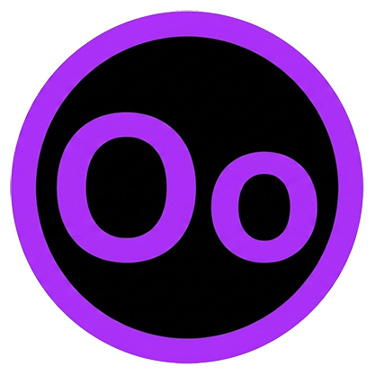

OopsCaps
Viegla, portatīva utilītprogramma, kas ļauj ātri mainīt iezīmētā teksta reģistru jebkurā aplikācijā, izmantojot globālos karstos taustiņus (hotkeys).
A lightweight, portable utility that allows you to quickly change the case of selected text in any application using global hotkeys.
- 4 Režīmi: 4 Modes: Invert, UPPERCASE, lowercase, Title Case.
- Smart Caps Lock: Smart Caps Lock: Automātiski pārslēdz Caps Lock statusu pēc Invert funkcijas. Automatically toggles Caps Lock state after the Invert function.
- Pielāgojami taustiņi: Customizable hotkeys: Izvēlies savas kombinācijas. Set your own key combinations.
Kā lietot:How to use:
- Palaid OopsCaps (tas darbosies fonā/tray). Run OopsCaps (it will run quietly in the background/tray).
- Iezīmē tekstu jebkurā dokumentā vai pārlūkā. Select text in any editor, browser, or document.
- Nospied izvēlēto kombināciju (piem. Ctrl+Shift+I lai apgrieztu reģistru). Press the chosen hotkey (e.g. Ctrl+Shift+I to invert case).
*Aplikācija ir pārnēsājama (Portable) un nav nepieciešama instalācija. Pieejama latviešu, angļu un krievu valodās. *The application is portable and requires no installation. Interface available in English, Latvian, and Russian.
Tad un Tagad Then and Today
Aplikācija, kas ļauj salīdzināt vēsturiskas fotogrāfijas ar mūsdienu skatu, izmantojot tava viedtālruņa kameru. Perfekts rīks pilsētpētniekiem un vēstures entuziastiem.
An application that allows you to compare historical photos with the present-day view using your smartphone camera. Perfect tool for urban explorers and history enthusiasts.
- Reāllaika kamera: Real-time camera: Redzi vēsturisko attēlu pāri kameras skatam. See the historical image overlaid on the camera view.
- Pielāgošana: Customization: Maini caurspīdīgumu un pievelc (zoom). Adjust opacity and zoom level.
- Salīdzināšana: Comparison: Interaktīvs slīdnis (slider) starp "Tad" un "Tagad". Interactive slider between the historical and new photo.
Dizains un tehnoloģijas:Design and technologies:
Izmanto moderno Glassmorphism dizainu, animētus gradientus un pielāgojas gaišajam/tumšajam režīmam. Uzbūvēta, izmantojot tīru HTML5, CSS3 un JavaScript (MediaDevices & Canvas API). Strādā tieši pārlūkā (iOS Safari, Android Chrome). Features modern Glassmorphism design, animated gradient backgrounds, and adapts to light/dark themes. Built using pure HTML5, CSS3, and JavaScript (MediaDevices & Canvas API). Works seamlessly in mobile browsers.